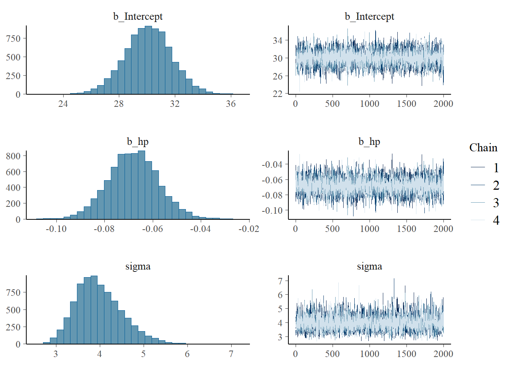
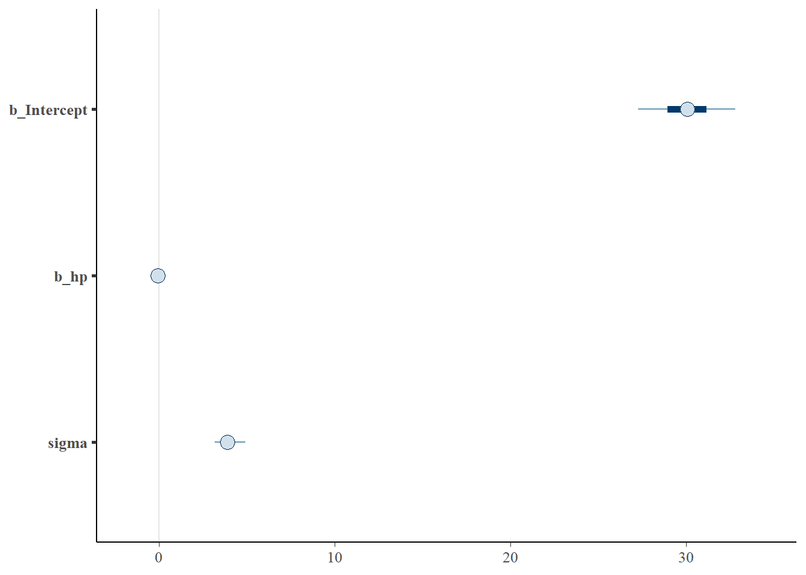

#install.packages("brms")
#install.packages("rstanarm")
library(brms)
library(rstanarm)Introduction to Bayesian Statistics in R
R
1. บทนำ
ในการสร้างโมเดล Bayesian ใน R มีหลายแพ็กเกจที่ช่วยให้เราสามารถวิเคราะห์ข้อมูลได้ง่ายขึ้น โดยสองแพ็กเกจยอดนิยม ได้แก่ {brms} และ {rstanarm} ซึ่งทำให้สามารถสร้างโมเดล Bayesian Regression ได้โดยไม่ต้องเขียนโค้ด Stan เอง
2. ติดตั้งและตั้งค่าแพ็กเกจ
ก่อนอื่นต้องติดตั้งและโหลดแพ็กเกจที่จำเป็น:
3. ตัวอย่างโมเดล Bayesian Linear Regression ด้วย {brms}
เราจะลองสร้างโมเดล Bayesian Linear Regression โดยใช้ชุดข้อมูล mtcars เพื่อพยากรณ์ mpg (อัตราสิ้นเปลืองเชื้อเพลิง) จาก hp (แรงม้า)
# โมเดลเบื้องต้น
bayes_model <- brm(
mpg ~ hp,
data = mtcars,
family = gaussian(),
prior = set_prior("normal(0, 10)", class = "b"),
chains = 4,
iter = 2000,
warmup = 1000,
seed = 1234
)
SAMPLING FOR MODEL 'anon_model' NOW (CHAIN 1).
Chain 1:
Chain 1: Gradient evaluation took 5.1e-05 seconds
Chain 1: 1000 transitions using 10 leapfrog steps per transition would take 0.51 seconds.
Chain 1: Adjust your expectations accordingly!
Chain 1:
Chain 1:
Chain 1: Iteration: 1 / 2000 [ 0%] (Warmup)
Chain 1: Iteration: 200 / 2000 [ 10%] (Warmup)
Chain 1: Iteration: 400 / 2000 [ 20%] (Warmup)
Chain 1: Iteration: 600 / 2000 [ 30%] (Warmup)
Chain 1: Iteration: 800 / 2000 [ 40%] (Warmup)
Chain 1: Iteration: 1000 / 2000 [ 50%] (Warmup)
Chain 1: Iteration: 1001 / 2000 [ 50%] (Sampling)
Chain 1: Iteration: 1200 / 2000 [ 60%] (Sampling)
Chain 1: Iteration: 1400 / 2000 [ 70%] (Sampling)
Chain 1: Iteration: 1600 / 2000 [ 80%] (Sampling)
Chain 1: Iteration: 1800 / 2000 [ 90%] (Sampling)
Chain 1: Iteration: 2000 / 2000 [100%] (Sampling)
Chain 1:
Chain 1: Elapsed Time: 0.034 seconds (Warm-up)
Chain 1: 0.015 seconds (Sampling)
Chain 1: 0.049 seconds (Total)
Chain 1:
SAMPLING FOR MODEL 'anon_model' NOW (CHAIN 2).
Chain 2:
Chain 2: Gradient evaluation took 6e-06 seconds
Chain 2: 1000 transitions using 10 leapfrog steps per transition would take 0.06 seconds.
Chain 2: Adjust your expectations accordingly!
Chain 2:
Chain 2:
Chain 2: Iteration: 1 / 2000 [ 0%] (Warmup)
Chain 2: Iteration: 200 / 2000 [ 10%] (Warmup)
Chain 2: Iteration: 400 / 2000 [ 20%] (Warmup)
Chain 2: Iteration: 600 / 2000 [ 30%] (Warmup)
Chain 2: Iteration: 800 / 2000 [ 40%] (Warmup)
Chain 2: Iteration: 1000 / 2000 [ 50%] (Warmup)
Chain 2: Iteration: 1001 / 2000 [ 50%] (Sampling)
Chain 2: Iteration: 1200 / 2000 [ 60%] (Sampling)
Chain 2: Iteration: 1400 / 2000 [ 70%] (Sampling)
Chain 2: Iteration: 1600 / 2000 [ 80%] (Sampling)
Chain 2: Iteration: 1800 / 2000 [ 90%] (Sampling)
Chain 2: Iteration: 2000 / 2000 [100%] (Sampling)
Chain 2:
Chain 2: Elapsed Time: 0.027 seconds (Warm-up)
Chain 2: 0.015 seconds (Sampling)
Chain 2: 0.042 seconds (Total)
Chain 2:
SAMPLING FOR MODEL 'anon_model' NOW (CHAIN 3).
Chain 3:
Chain 3: Gradient evaluation took 6e-06 seconds
Chain 3: 1000 transitions using 10 leapfrog steps per transition would take 0.06 seconds.
Chain 3: Adjust your expectations accordingly!
Chain 3:
Chain 3:
Chain 3: Iteration: 1 / 2000 [ 0%] (Warmup)
Chain 3: Iteration: 200 / 2000 [ 10%] (Warmup)
Chain 3: Iteration: 400 / 2000 [ 20%] (Warmup)
Chain 3: Iteration: 600 / 2000 [ 30%] (Warmup)
Chain 3: Iteration: 800 / 2000 [ 40%] (Warmup)
Chain 3: Iteration: 1000 / 2000 [ 50%] (Warmup)
Chain 3: Iteration: 1001 / 2000 [ 50%] (Sampling)
Chain 3: Iteration: 1200 / 2000 [ 60%] (Sampling)
Chain 3: Iteration: 1400 / 2000 [ 70%] (Sampling)
Chain 3: Iteration: 1600 / 2000 [ 80%] (Sampling)
Chain 3: Iteration: 1800 / 2000 [ 90%] (Sampling)
Chain 3: Iteration: 2000 / 2000 [100%] (Sampling)
Chain 3:
Chain 3: Elapsed Time: 0.023 seconds (Warm-up)
Chain 3: 0.015 seconds (Sampling)
Chain 3: 0.038 seconds (Total)
Chain 3:
SAMPLING FOR MODEL 'anon_model' NOW (CHAIN 4).
Chain 4:
Chain 4: Gradient evaluation took 7e-06 seconds
Chain 4: 1000 transitions using 10 leapfrog steps per transition would take 0.07 seconds.
Chain 4: Adjust your expectations accordingly!
Chain 4:
Chain 4:
Chain 4: Iteration: 1 / 2000 [ 0%] (Warmup)
Chain 4: Iteration: 200 / 2000 [ 10%] (Warmup)
Chain 4: Iteration: 400 / 2000 [ 20%] (Warmup)
Chain 4: Iteration: 600 / 2000 [ 30%] (Warmup)
Chain 4: Iteration: 800 / 2000 [ 40%] (Warmup)
Chain 4: Iteration: 1000 / 2000 [ 50%] (Warmup)
Chain 4: Iteration: 1001 / 2000 [ 50%] (Sampling)
Chain 4: Iteration: 1200 / 2000 [ 60%] (Sampling)
Chain 4: Iteration: 1400 / 2000 [ 70%] (Sampling)
Chain 4: Iteration: 1600 / 2000 [ 80%] (Sampling)
Chain 4: Iteration: 1800 / 2000 [ 90%] (Sampling)
Chain 4: Iteration: 2000 / 2000 [100%] (Sampling)
Chain 4:
Chain 4: Elapsed Time: 0.033 seconds (Warm-up)
Chain 4: 0.015 seconds (Sampling)
Chain 4: 0.048 seconds (Total)
Chain 4: # สรุปผลโมเดล
summary(bayes_model) Family: gaussian
Links: mu = identity; sigma = identity
Formula: mpg ~ hp
Data: mtcars (Number of observations: 32)
Draws: 4 chains, each with iter = 2000; warmup = 1000; thin = 1;
total post-warmup draws = 4000
Regression Coefficients:
Estimate Est.Error l-95% CI u-95% CI Rhat Bulk_ESS Tail_ESS
Intercept 30.08 1.63 26.90 33.23 1.00 3431 2594
hp -0.07 0.01 -0.09 -0.05 1.00 3544 2507
Further Distributional Parameters:
Estimate Est.Error l-95% CI u-95% CI Rhat Bulk_ESS Tail_ESS
sigma 3.97 0.54 3.08 5.18 1.00 2955 2388
Draws were sampled using sampling(NUTS). For each parameter, Bulk_ESS
and Tail_ESS are effective sample size measures, and Rhat is the potential
scale reduction factor on split chains (at convergence, Rhat = 1).การแปลผลลัพธ์ของโมเดล
เมื่อเรียก summary(bayes_model) เราจะเห็นค่าประมาณของสัมประสิทธิ์ (Estimate) และค่าความไม่แน่นอน (Credible Interval) ซึ่งแตกต่างจากโมเดล Frequentist ที่ใช้ค่า p-value
# ตรวจสอบการแจกแจงพารามิเตอร์
plot(bayes_model)การพล็อตผลลัพธ์จะช่วยให้เราเห็นการกระจายตัวของพารามิเตอร์ รวมถึงตรวจสอบว่ามีความไม่แน่นอนมากน้อยเพียงใด
ฟังก์ชัน brm() มาจากแพ็กเกจ {brms} ใน R ซึ่งใช้สำหรับสร้างโมเดล Bayesian Generalized (Non-)Linear Models โดยทำให้เราสามารถใช้วิธี Bayesian Inference ได้ง่ายขึ้นผ่านการเขียนโค้ดคล้ายกับ lm() และ glm() ของ Frequentist
โครงสร้างของฟังก์ชัน brm()
อธิบายอาร์กิวเมนต์หลัก
formula– กำหนดสมการโมเดล เช่นmpg ~ hp + wtdata– ชุดข้อมูลที่ใช้สร้างโมเดลfamily– กำหนดรูปแบบการแจกแจง เช่นgaussian()(สำหรับข้อมูลต่อเนื่อง, เทียบเท่า Linear Regression)bernoulli()(สำหรับข้อมูล binary, เทียบเท่า Logistic Regression)poisson()(สำหรับข้อมูลนับ)
prior– กำหนด Prior Distribution ของพารามิเตอร์ เช่นprior = set_prior("normal(0, 10)", class = "b")หากไม่กำหนด ค่า Prior จะถูกตั้งค่าเป็นค่าเริ่มต้นที่เหมาะสม
iter– จำนวน iteration ใน MCMC (ค่าเริ่มต้นคือ 2000)chains– จำนวน Markov chains (ค่าเริ่มต้นคือ 4)cores– จำนวนคอร์ของ CPU ที่ใช้ประมวลผล (ควรตั้งให้เท่ากับจำนวน chains เพื่อเพิ่มความเร็ว)control– ปรับค่า parameter ของ NUTS sampler เช่นadapt_delta: ค่าต่ำไปอาจทำให้เกิด divergent transitions (ค่าเริ่มต้น 0.8)
ตัวอย่างการใช้งาน
1. โมเดล Bayesian Linear Regression
library(brms)
# โหลดข้อมูล mtca
data(mtcars)
# โมเดล: mpg~ hp
bayes_model <- brm(
mpg ~ hp,
data = mtcars,
family = gaussian(),
prior = set_prior("normal(0, 10)", class = "b"),
iter = 4000,
chains = 4,
cores = 4
) 2. ตรวจสอบผลลัพธ์โมเดล
summary(bayes_model) Family: gaussian
Links: mu = identity; sigma = identity
Formula: mpg ~ hp
Data: mtcars (Number of observations: 32)
Draws: 4 chains, each with iter = 4000; warmup = 2000; thin = 1;
total post-warmup draws = 8000
Regression Coefficients:
Estimate Est.Error l-95% CI u-95% CI Rhat Bulk_ESS Tail_ESS
Intercept 30.06 1.74 26.59 33.43 1.00 7296 5172
hp -0.07 0.01 -0.09 -0.05 1.00 7345 5303
Further Distributional Parameters:
Estimate Est.Error l-95% CI u-95% CI Rhat Bulk_ESS Tail_ESS
sigma 3.99 0.54 3.10 5.24 1.00 6306 4946
Draws were sampled using sampling(NUTS). For each parameter, Bulk_ESS
and Tail_ESS are effective sample size measures, and Rhat is the potential
scale reduction factor on split chains (at convergence, Rhat = 1).# ตรวจสอบค่า Prior และ Posterior
prior_summary(bayes_model)| prior | class | coef | group | resp | dpar | nlpar | lb | ub | source |
|---|---|---|---|---|---|---|---|---|---|
| normal(0, 10) | b | user | |||||||
| b | hp | default | |||||||
| student_t(3, 19.2, 5.4) | Intercept | default | |||||||
| student_t(3, 0, 5.4) | sigma | 0 | default |
# ดูผลลัพธ์สรุปค่าประมาณของพารามิเตอร์
summary(bayes_model) Family: gaussian
Links: mu = identity; sigma = identity
Formula: mpg ~ hp
Data: mtcars (Number of observations: 32)
Draws: 4 chains, each with iter = 4000; warmup = 2000; thin = 1;
total post-warmup draws = 8000
Regression Coefficients:
Estimate Est.Error l-95% CI u-95% CI Rhat Bulk_ESS Tail_ESS
Intercept 30.06 1.74 26.59 33.43 1.00 7296 5172
hp -0.07 0.01 -0.09 -0.05 1.00 7345 5303
Further Distributional Parameters:
Estimate Est.Error l-95% CI u-95% CI Rhat Bulk_ESS Tail_ESS
sigma 3.99 0.54 3.10 5.24 1.00 6306 4946
Draws were sampled using sampling(NUTS). For each parameter, Bulk_ESS
and Tail_ESS are effective sample size measures, and Rhat is the potential
scale reduction factor on split chains (at convergence, Rhat = 1).# พล็อตการแจกแจงของพารามิเตอร์
plot(bayes_model)
# ตรวจสอบการรวมตัวของ Markov Chains
mcmc_plot(bayes_model)
3. โมเดล Logistic Regression
ถ้าเรามีตัวแปรเป้าหมายเป็นค่าทางเลือก (เช่น 0/1) เราสามารถใช้โมเดลโลจิสติกได้:
Family: bernoulli
Links: mu = logit
Formula: am ~ hp + wt
Data: mtcars (Number of observations: 32)
Draws: 4 chains, each with iter = 4000; warmup = 2000; thin = 1;
total post-warmup draws = 8000
Regression Coefficients:
Estimate Est.Error l-95% CI u-95% CI Rhat Bulk_ESS Tail_ESS
Intercept 10.60 3.02 5.16 16.96 1.00 5778 5299
hp 0.02 0.01 0.00 0.04 1.00 4579 4997
wt -4.55 1.16 -6.95 -2.38 1.00 4191 4230
Draws were sampled using sampling(NUTS). For each parameter, Bulk_ESS
and Tail_ESS are effective sample size measures, and Rhat is the potential
scale reduction factor on split chains (at convergence, Rhat = 1).ข้อดีของ brm()
ใช้งานง่าย คล้ายกับ
lm()และglm()รองรับการใช้ Prior ทำให้สามารถควบคุมโมเดล Bayesian ได้
ใช้ Stan เป็น backend ทำให้มีความยืดหยุ่นสูงและประสิทธิภาพดี
รองรับโมเดลที่ซับซ้อน เช่น hierarchical models และ mixed-effects models